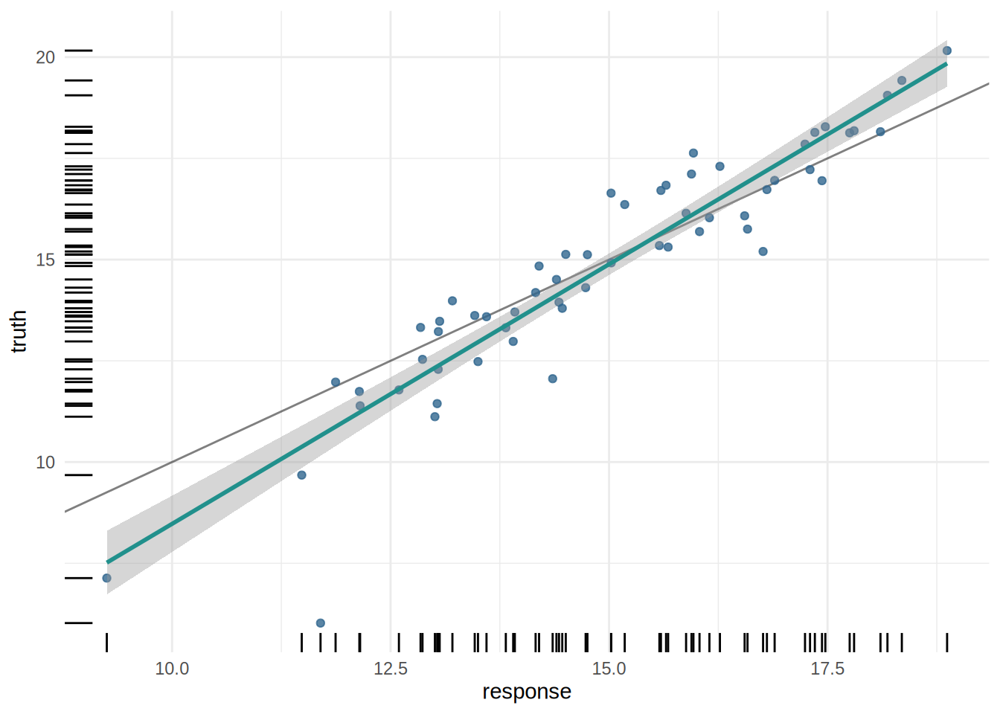
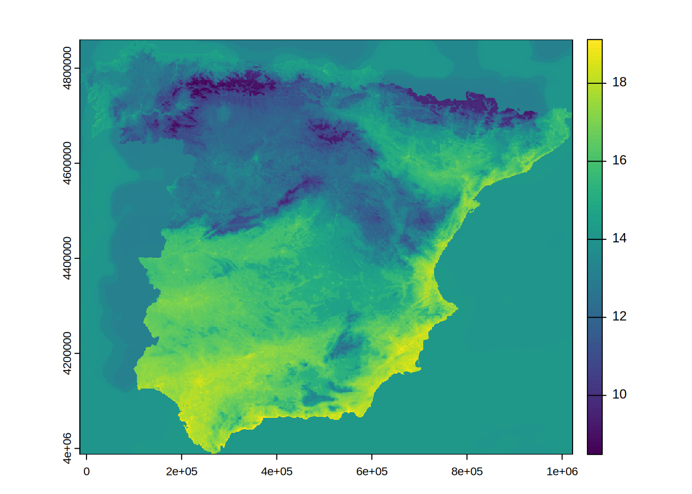
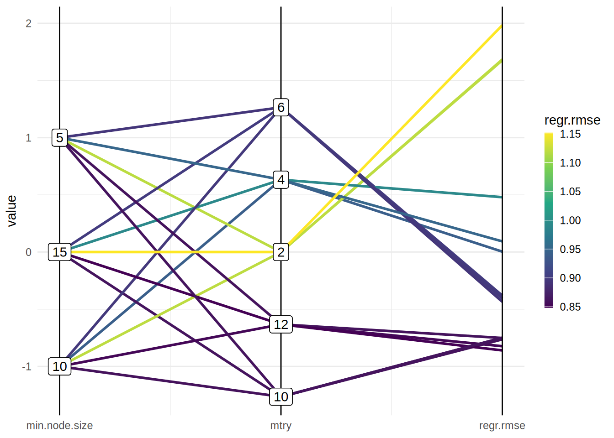
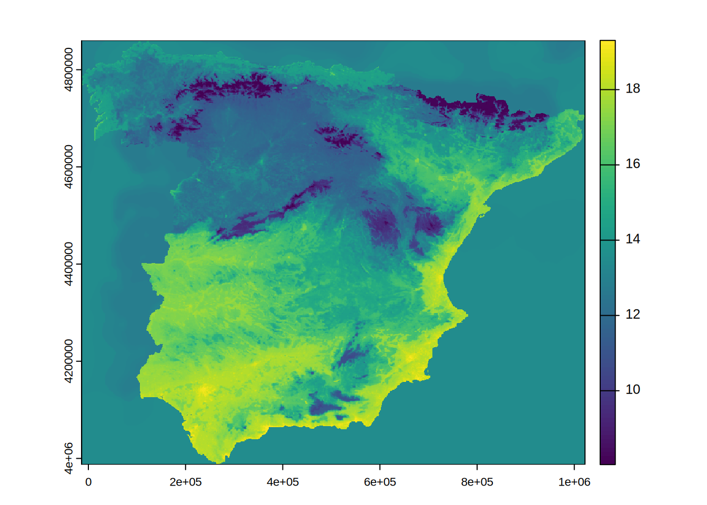
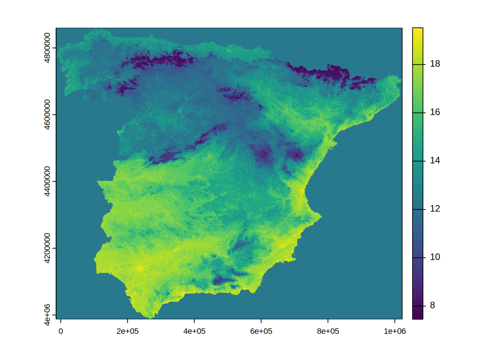

install.packages("mlr3verse")
install.packages("mlr3spatial")
install.packages("sf")
install.packages("terra")mlr3
Aims of this post
I want to give a minimal example on how to use mlr3 for a spatial prediction task. We want to get from measurements of temperature at specific locations in Spain to a spatially continuous map of temperature for all of Spain.
Such a spatial prediction task is often done by applying machine learning algorithms that are not necessarily developed for spatial tasks specifically and hence do not consider problems we might encounter in the spatial world, e.g. spatial autocorrelation or map extrapolation. In the last decade, a lot of methodological developments were made by various research groups to consider and deal with such specialties of spatial mapping. Many of which found their way in software packages such as mlr3.
Setup
library(sf)
library(terra)Casestudy data
covariates = terra::rast("data/predictors.tif")
temperature = sf::read_sf("data/temp_train.gpkg")
spain = sf::read_sf("data/spain.gpkg") |> st_cast("POLYGON") |> st_transform(st_crs(temperature))
temperature = terra::extract(covariates, temperature, bind = TRUE) |>
sf::st_as_sf()
# the sf object cannot contain a column named "X" or "Y". Otherwise the task creation will fail because "Assertion on 'data' failed: Must have unique colnames"
temperature$X = NULL
temperature$Y = NULLSome words about the terminology that is specific to the example data:
spainis the region outline - for visualization purposes and knndm setupcovariatesare the spatially explicit data data to predict on (to prevent wording confusions with the predict function or the prediction)temperatureare the measured temperature data (i.e. the response variable, i.e. the ground truth) along with the covariates at the measurement location
Official Documentation
The best general introduction to mlr3 is probably the official mlr3 book which you can access for free here: https://mlr3book.mlr-org.com/
The homepage https://mlr-org.com/ also gives a very detailed overview of all the associated packages an current developments.
The individual packages also have their own documentation pages. There you will find more specific topics. The “spatial” packages are the following:
mlr3spatial implements support for spatial data types in R. https://mlr3spatial.mlr-org.com/
mlr3spatiotemporalcv implements spatial cross-validation methods in the workflow. https://mlr3spatiotempcv.mlr-org.com/articles/mlr3spatiotempcv.html
library(mlr3verse)Loading required package: mlr3
Attaching package: 'mlr3'The following object is masked from 'package:terra':
resamplelibrary(mlr3spatial)
library(mlr3viz)mlr3 functions can be very verbose. For this blog post, I turned off messages for a less overwhelming tutorial.
Code
lgr::get_logger("mlr3")$set_threshold("warn")
lgr::get_logger("bbotk")$set_threshold("warn")Getting started with mlr3
First of all, mlr3 uses R6 classes and therefor an object-orineted design paradigm. This might be not intuitive for a lot of R users and more in line with something like sklearn from python. In general, with R6 classes you define an object first, and this object contains all the methods and parameters you want to access.
The R6 class thing has a serious disadvantage in the comfort functions of Rstudio, e.g. no in-line popup help of available parameters of a model. You have to know and look up the parameters to set in the ranger function.
Let’s define a minimum spatial prediction task example with mlr3 classes:
mlr3 implements a language. You have to know a lot of specific terminology in order to comfortably use the functions. I try to use the mlr3 terminology here and give some alternative terms in parenthesis.
Task
The task defines general information about the data we have at hand. From our point observations we create the task and define what column the target (response / dependent) variable is, what column the geometry (coordinates) is and whether we want to use the coordinates as features (predictors). In this example, we also split the data in our task into a training and a test partition.
task_spain = mlr3spatial::as_task_regr_st(temperature,
target = "temp",
coordinate_names = "geometry",
coords_as_features = TRUE,
crs = st_crs(temperature))
train_test_split = mlr3::partition(task_spain, ratio = 0.7)st_drop_geometry()
In caret, if we want to use spatial data, we have to specifically exclude the geometry column of the sf object. We lose the spatial information in the process of model training and prediction. However, this information can be critical, e.g. if we want to use CAST::errorprofiles or CAST::knncv. In mlr3 we can keep the geometry and can also define whether we want to use the coordinates as predictors.
Learner
The learner is the model type or algorithm we want to use with all it’s necessary or optional parameters. Here I define a Random Forest regression Model from the ranger package with 100 decision trees and an mtry of 4.
rfmodel = mlr3::lrn("regr.ranger", num.trees = 100, mtry = 4)Measure
In order to evaluate the a score (model performance) e.g. from the previously defined test data partition, we need to define a measure. Here I use the Root Mean Squared Error.
measure_rmse = mlr3::msr("regr.rmse")Training, Validation and Prediciton
We now have everything defined to actually do something. To train the model we can use the train method from out defined learner. And we have to tell the train method on what to actually fit the model - in this case the data in task_spain, but only the subset we sampled as training data.
rfmodel$train(task_spain, row_ids = train_test_split$train)
rfmodel$modelRanger result
Call:
ranger::ranger(dependent.variable.name = task$target_names, data = task$data(), case.weights = task$weights$weight, mtry = 4L, num.threads = 1L, num.trees = 100L)
Type: Regression
Number of trees: 100
Sample size: 136
Number of independent variables: 22
Mtry: 4
Target node size: 5
Variable importance mode: none
Splitrule: variance
OOB prediction error (MSE): 1.055027
R squared (OOB): 0.8676675 To test how well out model performs now on unseen data, we use the predict method of our fitted learner. Again, we tell the predict method on what data to predict. We can then calculate the score of this test prediction i.e. the RMSE we defined earlier as out measure.
test_prediction = rfmodel$predict(task_spain, row_ids = train_test_split$test)
test_prediction$score(measure_rmse)regr.rmse
1.163264 plot(test_prediction)
Finally, we can also use the model to predict temperatures for the whole raster by using the predict function from terra. Alternatively, we could use predict_spatial for the mlr3spatial package.
prediction = terra::predict(covariates, rfmodel)
plot(prediction)
Spatial cross-validation hyperparameter tuning
In many cases, the ideal model hyperparameters are not obvious and we have the possibility to tune them based on
Define the c-v strategy and hyperparameters
Again, we first define the necessary mlr3 objects for our tuning process. With rsmp we decide on a resampling strategy i.e. the data partitions we use as cross-validation folds. The package mlr3spatiotemporalcv contains the popular spatial resampling strategies such as blockcv (spcv_block used in the example below) or knndm.
For the learner instead of predefined hyperparameters, we use the function to_tune() where we can specify different values for the hyperparameters we want to test.
library(mlr3spatiotempcv)
resampling_blockcv = rsmp("spcv_block", folds = 5, range = 5000)
rfmodel = lrn("regr.ranger",
num.trees = 100,
mtry = to_tune(c(2,4,6,10,12)),
min.node.size = to_tune(c(5,10,15)),
importance = "impurity")Now we can assemble everything together in a tuning instance object with the ti() function. The first four arguments should be self explainatory. terminator means, if we want to stop with our search for the best hyperparameter combination after some criteria is met. store_benchmark_results and store_models regulates whether we want to keep the measures and models for all the hyperparameter combinations we test.
Finally, we have to decide on a strategy on how to search with the tuner object. Here I use grid_search which is the brute force method that tests every possible combination once. We then execute the cross-validation with the optimize method from the tuner object.
tuning_blockcv = ti(task = task_spain, # the data
resampling = resampling_blockcv, # the folds
learner = rfmodel, # the rfmodel with mtry and min.node.size to tune
measures = measure_rmse, # how to measure performance
terminator = trm("none"),
store_benchmark_result = TRUE,
store_models = TRUE)
tuner_grid_search = mlr3tuning::tnr("grid_search")
tuner_grid_search$optimize(tuning_blockcv) min.node.size mtry learner_param_vals x_domain regr.rmse
<char> <char> <list> <list> <num>
1: 15 12 <list[5]> <list[2]> 0.8484479The results are stored in the defined tuning instance object. We also have some nice plotting options with the mlr3viz package.
tuning_blockcv$result_learner_param_vals$importance
[1] "impurity"
$num.threads
[1] 1
$num.trees
[1] 100
$min.node.size
[1] 15
$mtry
[1] 12tuning_blockcv$result_yregr.rmse
0.8484479 autoplot(tuning_blockcv, type = "parallel")
Because we set store_benchmark_result = TRUE and store_models = TRUE, we also have a archive where all the other results are stored.
tuning_blockcv$archive$data min.node.size mtry regr.rmse warnings errors runtime_learners
<char> <char> <num> <int> <int> <num>
1: 10 4 0.9405085 0 0 0.089
2: 15 10 0.8601679 0 0 0.114
3: 5 2 1.1189410 0 0 0.088
4: 10 12 0.8523655 0 0 0.137
5: 10 2 1.1196396 0 0 0.065
6: 15 6 0.8995759 0 0 0.088
7: 15 4 0.9912738 0 0 0.076
8: 5 6 0.8937978 0 0 0.120
9: 10 10 0.8587639 0 0 0.127
10: 10 6 0.8969184 0 0 0.095
11: 5 4 0.9500798 0 0 0.098
12: 5 12 0.8600105 0 0 0.189
13: 15 12 0.8484479 0 0 0.120
14: 5 10 0.8603275 0 0 0.164
15: 15 2 1.1515806 0 0 0.062
uhash x_domain timestamp batch_nr
<char> <list> <POSc> <int>
1: a935618a-08a0-4f7d-8515-9b91608bc395 <list[2]> 2025-02-19 10:16:20 1
2: c5551b50-a3ae-47a7-8620-82da122090c0 <list[2]> 2025-02-19 10:16:20 2
3: 5467cd72-412f-4326-911b-52f71d49a776 <list[2]> 2025-02-19 10:16:21 3
4: c365cc00-ee31-4ecd-b6e2-7a337a342040 <list[2]> 2025-02-19 10:16:21 4
5: 7ad5b0a0-a1e5-43d6-af74-eee27b383e6e <list[2]> 2025-02-19 10:16:21 5
6: dd455920-d4b5-483d-b85b-378c9837005d <list[2]> 2025-02-19 10:16:21 6
7: 38d6b903-5094-4667-828a-97d6d1e53b4f <list[2]> 2025-02-19 10:16:21 7
8: 1e7dc6a0-13bc-455a-ba60-f036d51b149a <list[2]> 2025-02-19 10:16:21 8
9: 10bd21e8-a6a9-48c5-ac11-7fc2fdb3553f <list[2]> 2025-02-19 10:16:22 9
10: 4726f628-83cf-45df-aedc-dcccf7fde289 <list[2]> 2025-02-19 10:16:22 10
11: fb781ae7-74fa-4b16-880d-74c01ba6238b <list[2]> 2025-02-19 10:16:22 11
12: 2e5c7222-1b56-4be1-ad90-a07f53701300 <list[2]> 2025-02-19 10:16:22 12
13: 41a112ba-b8c5-4c5d-8163-8952ea8271f8 <list[2]> 2025-02-19 10:16:22 13
14: 209fd54e-899d-4260-afb5-20a0a085d08b <list[2]> 2025-02-19 10:16:23 14
15: 46e32cbb-6918-4c51-885e-347ad30724ac <list[2]> 2025-02-19 10:16:23 15Final model with optimized hyperparameter
Once we found the optimal hyperparameter combination we can use them to train a final model on all the data. We define a new learner and assign the parameters from our tuning instance to it. Then we can train and predict again.
tuned_rfmodel = lrn("regr.ranger")
tuned_rfmodel$param_set$values = tuning_blockcv$result_learner_param_vals
tuned_rfmodel$train(task_spain)
tuned_prediction = terra::predict(covariates, tuned_rfmodel)
plot(tuned_prediction)
Feature Selection
Define the feature selection strategy
Similar to the hyperparameter tuning, we can use the cross-validation strategy to test whether we can build a model with reduces predictors / covariates / features / variable. Here I demonstrate a forward variable selection, that starts out with the best performing pair of variables and appends additional variables, if there is still an increase in our cross-validation performance estimation.
First we have to define the feature selection strategy with fs(). I use a learner here with fixed hyperparameters. Everything is put toghether in the fselect() function that creates a feature selection instance in which all the information, methods and results are stored.
library(mlr3fselect)
library(mlr3filters)
select_mode = fs("sequential", min_features = 2)
fs_rfmodel = lrn("regr.ranger",
num.trees = 50,
mtry = 2,
min.node.size = 5,
importance = "impurity")
set.seed(20)
feature_selection = fselect(
fselector = select_mode,
task = task_spain,
learner = fs_rfmodel,
resampling = resampling_blockcv,
measure = measure_rmse)Warning in .__Codomain__maximization_to_minimization(self = self, private = private, : 'maximization_to_minimization' is deprecated.
Use 'direction' instead.
See help("Deprecated")
Warning in .__Codomain__maximization_to_minimization(self = self, private = private, : 'maximization_to_minimization' is deprecated.
Use 'direction' instead.
See help("Deprecated")
Warning in .__Codomain__maximization_to_minimization(self = self, private = private, : 'maximization_to_minimization' is deprecated.
Use 'direction' instead.
See help("Deprecated")
Warning in .__Codomain__maximization_to_minimization(self = self, private = private, : 'maximization_to_minimization' is deprecated.
Use 'direction' instead.
See help("Deprecated")
Warning in .__Codomain__maximization_to_minimization(self = self, private = private, : 'maximization_to_minimization' is deprecated.
Use 'direction' instead.
See help("Deprecated")
Warning in .__Codomain__maximization_to_minimization(self = self, private = private, : 'maximization_to_minimization' is deprecated.
Use 'direction' instead.
See help("Deprecated")
Warning in .__Codomain__maximization_to_minimization(self = self, private = private, : 'maximization_to_minimization' is deprecated.
Use 'direction' instead.
See help("Deprecated")
Warning in .__Codomain__maximization_to_minimization(self = self, private = private, : 'maximization_to_minimization' is deprecated.
Use 'direction' instead.
See help("Deprecated")
Warning in .__Codomain__maximization_to_minimization(self = self, private = private, : 'maximization_to_minimization' is deprecated.
Use 'direction' instead.
See help("Deprecated")
Warning in .__Codomain__maximization_to_minimization(self = self, private = private, : 'maximization_to_minimization' is deprecated.
Use 'direction' instead.
See help("Deprecated")
Warning in .__Codomain__maximization_to_minimization(self = self, private = private, : 'maximization_to_minimization' is deprecated.
Use 'direction' instead.
See help("Deprecated")
Warning in .__Codomain__maximization_to_minimization(self = self, private = private, : 'maximization_to_minimization' is deprecated.
Use 'direction' instead.
See help("Deprecated")
Warning in .__Codomain__maximization_to_minimization(self = self, private = private, : 'maximization_to_minimization' is deprecated.
Use 'direction' instead.
See help("Deprecated")
Warning in .__Codomain__maximization_to_minimization(self = self, private = private, : 'maximization_to_minimization' is deprecated.
Use 'direction' instead.
See help("Deprecated")
Warning in .__Codomain__maximization_to_minimization(self = self, private = private, : 'maximization_to_minimization' is deprecated.
Use 'direction' instead.
See help("Deprecated")
Warning in .__Codomain__maximization_to_minimization(self = self, private = private, : 'maximization_to_minimization' is deprecated.
Use 'direction' instead.
See help("Deprecated")
Warning in .__Codomain__maximization_to_minimization(self = self, private = private, : 'maximization_to_minimization' is deprecated.
Use 'direction' instead.
See help("Deprecated")
Warning in .__Codomain__maximization_to_minimization(self = self, private = private, : 'maximization_to_minimization' is deprecated.
Use 'direction' instead.
See help("Deprecated")
Warning in .__Codomain__maximization_to_minimization(self = self, private = private, : 'maximization_to_minimization' is deprecated.
Use 'direction' instead.
See help("Deprecated")
Warning in .__Codomain__maximization_to_minimization(self = self, private = private, : 'maximization_to_minimization' is deprecated.
Use 'direction' instead.
See help("Deprecated")
Warning in .__Codomain__maximization_to_minimization(self = self, private = private, : 'maximization_to_minimization' is deprecated.
Use 'direction' instead.
See help("Deprecated")feature_selection$result CAMSpm25 EDF1 EDF2 EDF3 EDF4 EDF5 X Y agriculture coast
<lgcl> <lgcl> <lgcl> <lgcl> <lgcl> <lgcl> <lgcl> <lgcl> <lgcl> <lgcl>
1: FALSE FALSE FALSE FALSE FALSE FALSE FALSE TRUE FALSE FALSE
dem imd industry lst_day lst_night natural ndvi ntl otherroads
<lgcl> <lgcl> <lgcl> <lgcl> <lgcl> <lgcl> <lgcl> <lgcl> <lgcl>
1: TRUE FALSE FALSE TRUE TRUE FALSE FALSE TRUE FALSE
popdens primaryroads urban features n_features
<lgcl> <lgcl> <lgcl> <list> <int>
1: TRUE FALSE FALSE Y,dem,lst_day,lst_night,ntl,popdens 6
regr.rmse
<num>
1: 0.7795219feature_selection$result_feature_set[1] "Y" "dem" "lst_day" "lst_night" "ntl" "popdens" Final model with selected features
Once we found the ideal combination of variables, we can reduce our task to those predictors, train a model and predict.
fs_task = task_spain$select(feature_selection$result_feature_set)
fs_rfmodel$train(fs_task)
fs_prediction = terra::predict(covariates, fs_rfmodel)
plot(fs_prediction)
Conclusions
- target audience: machine learning experts, python users
- object oriented paradigm with
R6classes and methods
Strengths
- Spatially explicit methods directly implemented
- Active development
- Very good introduction to the framework through the book
- Well documented functions
Weaknesses
- steep learning curve
mlr3provides lots of methods, options and possibilities which is good but can also be overwhelming- Help pages can be confusing if you don’t know what you are looking for through the
R6logic. - No in line help in RStudio